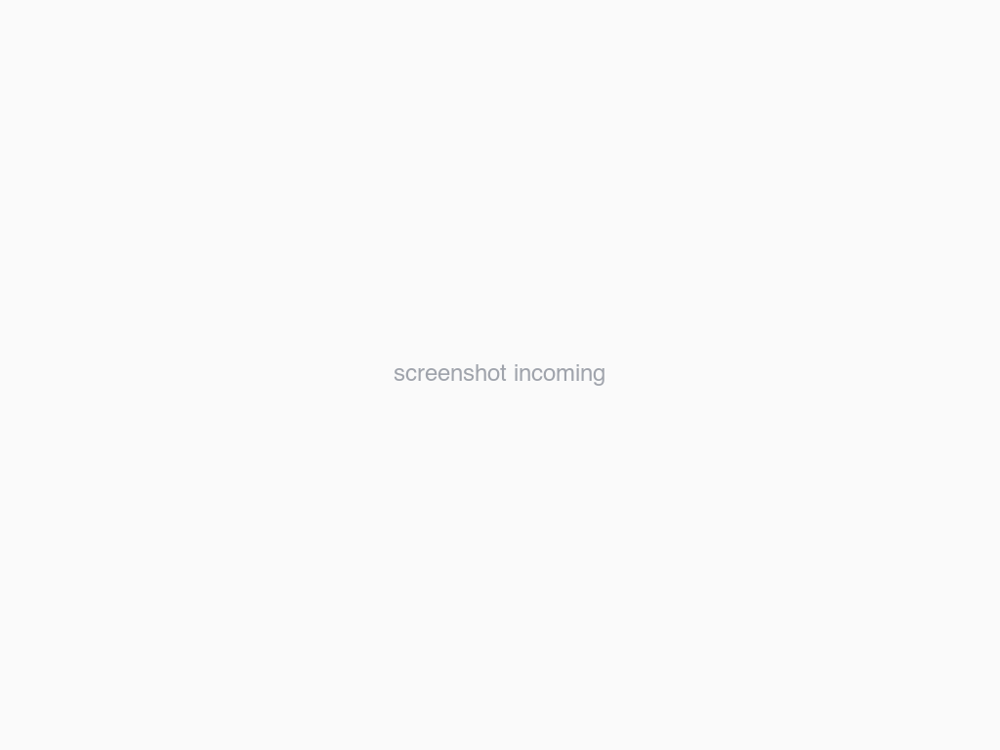
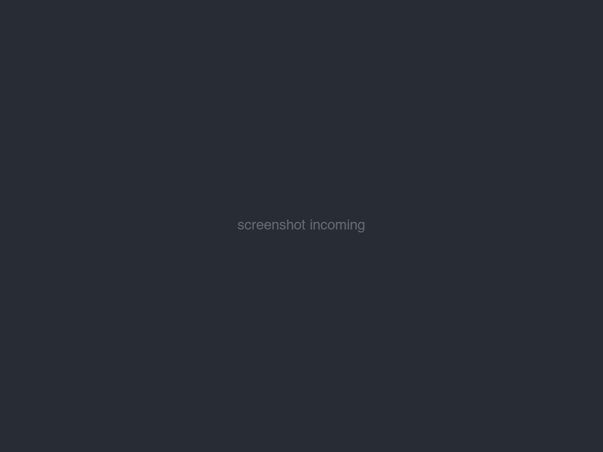

$mdv README.md
Markdown, rendered
at native speed.
mdv is a free, open-source markdown viewer written in Rust. No Electron, no webview, no JS runtime — just a ~30 MB binary that paints before your fonts finish loading.
This page speaks mdv: jk scroll · gG top/bottom · t theme · ⌘⇧P palette · ? all keys


## Why mdv
For reading folders of .md files without spinning up Obsidian's vault,
Typora's editor weight, or a static-site build. Open a folder. Read.
| mdv | Marky | Marked 2 | Glow | Obsidian | Typora | |
|---|---|---|---|---|---|---|
| Free | ✓ | ✓ | $14 | ✓ | freemium | $15 |
| Open source | ✓ | ✓ | — | ✓ | — | — |
| Native, no webview | ✓ | Tauri | ✓ | ✓ | — | partial |
| Windows | ✓ | — | — | ✓ | ✓ | ✓ |
| Folder workspace | ✓ | ✓ | — | — | ✓ | — |
| Read-only focus | ✓ | ✓ | ✓ | ✓ | — | — |
| Agent-controllable (IPC) | ✓ | — | — | — | — | — |
## Rust-fast, measurably
(was 453 MB)
Measured on an M2 MacBook Pro, median of 5 runs. Numbers, methodology, and how to reproduce: docs/benchmarks.md. The renderer is viewport-aware — only visible blocks become widgets, so memory stays flat no matter how long the document grows.
## Features
Workspace browser
Open a folder, get a file tree. Fuzzy-jump to any file with ⌘P.
Mindmap view
Any document as a collapsible mindmap with ⌘M. Arrow keys walk the tree, preview panel follows.
Diagrams & math
Mermaid and Graphviz DOT render natively. Block LaTeX via a pure-Rust layout engine — zero JS, zero webview.
Tree-sitter highlighting
Rust, Python, TS, Go, C/C++, Java, SQL, Bash and more — real parsers, not regex.
Vault-wide search
⌘⇧F searches every file in the workspace, Zed-style full-page results.
Live reload
Edits from your editor appear instantly. Only changed code blocks re-highlight.
Light / dark themes
One Dark, GitHub, Solarized, Gruvbox, Nord, Dracula, Tokyo Night… follows the system, or press ⌘T.
Auto-update
Checks GitHub releases, verifies SHA-256, swaps itself in place. Signed + notarized on macOS.
## Keyboard-first
Everything reachable without the mouse. The scroll keys work on this page — try them.
## Built for coding agents
mdv is single-instance with an IPC socket. Claude Code, Codex, or any agent can drive the window the human is reading — open files, jump to sections, switch view modes — without touching the keyboard.
# open a file at a specific line
mdv path/to/spec.md --line 42
# navigate the running instance
mdv goto --section "API/Authentication"
mdv mode mindmap
mdv current # prints JSON state
# stateless — no window needed
mdv list-sections spec.md | jq -r '.[].path'Every command returns one line of JSON. Your agent writes a doc, opens it at the right heading, and keeps working while you read.
## Install
From source
git clone https://github.com/minchenlee/mdv
cd mdv && cargo build --releaseRust 1.80+. Windows builds this way too.